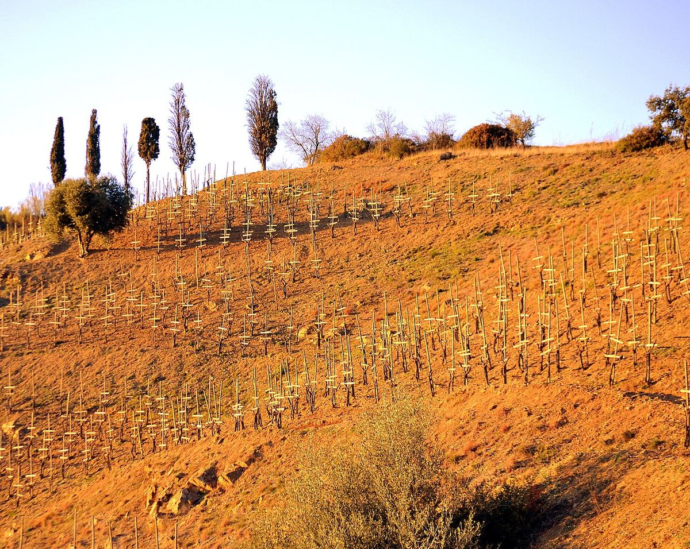

ROSSO
Il Priorat, nella provincia di Tarragona, è una delle due Denominazioni di origine qualificate della Spagna, insieme alla Rioja. I suoi rossi di Garnacha e Carignano, coltivati su pendii di scisto detto llicorella, si distinguono per concentrazione e carattere minerale.

Il nome Priorat deriva dal priorato della certosa di Scala Dei, fondata alla fine del XII secolo ai piedi della sierra del Montsant. I monaci certosini promossero per secoli la coltivazione della vite nella zona. Alla fine dell'Ottocento la fillossera devastò i vigneti e provocò una forte emigrazione, e per buona parte del Novecento la produzione si limitò a vino sfuso, in gran parte prodotto dalle cooperative. Alla fine degli anni Ottanta un piccolo gruppo di produttori, tra cui René Barbier, Álvaro Palacios, Carles Pastrana, Josep Lluís Pérez e Daphne Glorian, si stabilì attorno a Gratallops e iniziò a produrre rossi molto concentrati che diedero alla regione fama internazionale. Nel 2000 la Generalitat de Catalunya le conferì lo status di Denominazione di origine qualificata (DOQ in catalano), riconosciuto a livello statale nel 2009.
Il Priorat è una zona montuosa dell'entroterra di Tarragona, protetta a nord dalla sierra del Montsant. I vigneti sono coltivati su pendii spesso molto ripidi, a terrazze o direttamente sul declivio, con esposizioni e altitudini molto varie. Il clima è mediterraneo con tratti continentali: estati calde e secche, inverni freschi, piogge scarse e una marcata escursione termica tra il giorno e la notte.
Il suolo più caratteristico è la llicorella, uno scisto scuro che si sfalda in lamine e contiene particelle di mica che brillano al sole. È un suolo povero di sostanza organica, che costringe le radici a scendere in profondità alla ricerca d'acqua e limita fortemente le rese.
I vitigni tradizionali sono la Garnacha e il Carignano, spesso da vecchie viti ad alberello. Dalla fine del Novecento si coltivano anche Cabernet Sauvignon, Merlot e Syrah, impiegati soprattutto in uvaggio. Tra i bianchi spiccano Garnacha Blanca e Macabeo. I rossi del Priorat si distinguono per colore profondo, frutto maturo, struttura e un carattere spesso descritto come minerale. Si producono anche bianchi, alcuni rosati e, per tradizione, vini rancio e dolci.
Il Priorat ha sviluppato una classificazione basata sull'origine. I vins de vila provengono da una delle dodici zone riconosciute, che corrispondono a paesi o aree come Gratallops, Porrera, Torroja del Priorat, Bellmunt del Priorat, Poboleda o Escaladei. Al di sopra si collocano i vins de paratge, da località precise, e le categorie di vigneto classificato e grande vigneto classificato, riservate a parcelle con caratteristiche particolari.